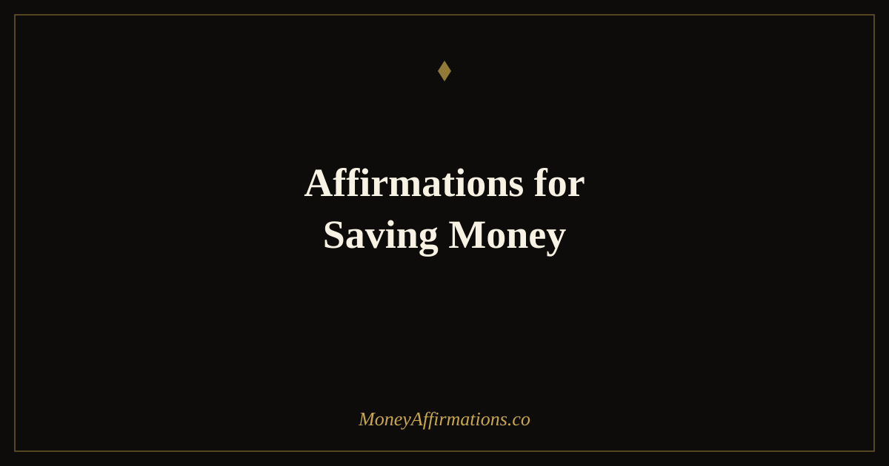

50 Affirmations for Saving Money to Build Your Financial Safety Net

Saving money is one of the most universally recommended financial habits in the world — and one of the hardest to sustain. Not because people do not want to save, but because the psychological friction around saving is enormous. The future feels abstract and uncertain. The present feels immediate and expensive. And the small amounts that are actually achievable can feel so insignificant that starting barely feels worth it.
Affirmations for saving money work by making the act of saving feel meaningful at every stage — from the first $20 you move into a savings account to the thousandth automated transfer you barely notice. They shift your relationship with the behaviour itself, so saving feels like a natural expression of who you are rather than a sacrifice you are forcing yourself to make. These 50 affirmations are arranged as a journey: beginning where you are, building as your savings grow, and carrying you through the moments when progress feels painfully slow.
What are saving money affirmations?
Saving money affirmations are present-tense, first-person statements that reinforce the beliefs and behaviours that support consistent saving. They work at the level of identity — helping you become a person who saves — rather than only at the level of information, which is why knowing you should save is rarely enough on its own.
Unlike general wealth affirmations, which tend to focus on receiving or attracting money, saving affirmations focus on your relationship with the money you already have. They reinforce the value of delayed gratification, the power of small consistent actions, and the security that comes from building a financial cushion. They are particularly valuable during the early stages of a saving practice, when the amounts feel too small to matter and the habit has not yet become automatic.
50 affirmations for saving money
Whether you are saving your first hundred dollars or your hundredth thousand, the affirmations that work are the ones that meet you where your savings are right now. Start with group one if you need to. Come back to group five when you are ready.
Saving your first $100 — the beginning
- I begin saving today, exactly where I am, with exactly what I have.
- Every dollar I save is a vote for my future self.
- Starting small is not a compromise — it is the right way to start.
- I am capable of building financial security one step at a time.
- My first hundred dollars is the foundation everything else is built on.
- I save something today, no matter how small, because something beats nothing every single time.
- I am choosing my future over my impulses, and that choice gets easier every day.
- I am proud of every single dollar I move into savings.
- I have started and starting is everything.
- I am a person who saves money, and today I am proving it.
Saving consistently every month
- I save every month, not just when it is easy.
- Consistency is more powerful than the amount — and I am consistent.
- I have made saving a non-negotiable part of my financial life.
- I automate my savings because I trust the process more than my daily willpower.
- Every month I save adds momentum to a habit that is growing stronger.
- I pay myself first and I do it with confidence.
- My savings habit is as reliable as any bill I pay.
- I make saving easy by removing the decision from the equation.
- Month after month, I am building something real and lasting.
- My commitment to saving is not conditional on what month it is or how things are going.
Saving toward a specific goal
- I know exactly what I am saving for and that clarity keeps me focused.
- Every deposit brings me measurably closer to something I genuinely want.
- I can see my goal clearly and I am moving toward it with every transfer I make.
- I make spending decisions with my goal in mind and it feels empowering, not restrictive.
- I am building the exact future I have chosen for myself.
- My goal is worth the wait and the wait is already making it sweeter.
- I track my progress because watching it grow is one of the best feelings I know.
- I celebrate every milestone on the way to my goal — they all count.
- I have the patience and the discipline to see this through to the end.
- When I reach this goal, I will set the next one — because this is who I am now.
When saving feels slow or impossible
- Slow progress is still progress, and I honour every step of it.
- I am doing the best I can with what I have right now, and that is genuinely enough.
- I do not compare my savings to anyone else's — I only compare to who I was last month.
- Difficult months do not erase the habit I have built — they test and strengthen it.
- I am patient with myself and with the process of building financial security.
- Even when I can only save a little, I save something — because the habit is the goal.
- I trust that small, steady deposits will compound into something meaningful over time.
- I am not behind — I am exactly where I need to be on my own timeline.
- I am kind to myself when saving is hard, and I keep going anyway.
- Every financial setback I have survived has made me more resourceful, more resilient, and more determined.
The committed long-term saver — building real security
- I am a committed, consistent saver and saving is a core part of my identity.
- The financial security I am building protects the people I love.
- I think in decades, not just months, and that perspective guides every financial decision I make.
- Compound growth is working for me every single day, even when I am not watching.
- I have built an emergency fund and that foundation changes how I experience every other area of my life.
- My future self is grateful for every decision my present self is making right now.
- I invest in my own security with the same commitment I bring to everything else I care about.
- I have moved from surviving to building, and that shift is irreversible.
- I am creating financial options for myself — the ability to choose, to rest, to say no when I need to.
- I am leaving a legacy of financial wisdom and security, and it starts with what I do today.
How to use these affirmations
The most important thing is to start with the right group for where you actually are — not where you wish you were. If you have saved nothing yet, group one is your group. If you have a consistent habit but feel frustrated by the pace, spend time in group four. Using affirmations that are too advanced for your current financial reality creates dissonance rather than motivation; using affirmations that meet you exactly where you are creates momentum.
A simple daily practice is to read your current group out loud in the morning, immediately after you have done any saving action — even a tiny transfer. The sequence of action followed by affirmation is more powerful than affirmation followed by action, because you are using the affirmation to reinforce a behaviour you have just completed, training your brain to associate saving with identity and self-approval rather than with sacrifice.
Once a month, after your regular savings transfer, move through all five groups in order. This gives you the full arc of the journey — reminding you where you started, affirming where you are, and pulling you forward toward where you are going. The contrast between groups one and five is itself a kind of progress measurement that no spreadsheet captures.
The psychology of saving money — why your future self is a stranger (and how to fix it)
One of the most important research findings in behavioural economics is that people treat their future selves more like strangers than like themselves. Hal Hershfield's neuroimaging research found that when people imagine their future self, the same brain regions activate as when they think about an unfamiliar person — not the regions associated with self-continuity. This is not a flaw in your character. It is a structural feature of how the human brain processes time. And it explains, more precisely than "lack of discipline," why saving for a future that feels unreal is so genuinely hard.
Temporal discounting compounds the problem. Research consistently shows that humans systematically overvalue immediate rewards relative to future ones — even when the future reward is dramatically larger. A dollar available today feels more real and more valuable than a hundred dollars in twenty years, even though the arithmetic clearly favours waiting. Affirmations help by making the future self feel more vivid, more present, and more worth protecting — which shifts the temporal discounting calculation in the direction of patience.
Richard Thaler and Cass Sunstein's nudge theory provides the mechanical solution: automation. When saving requires a daily decision, willpower is depleted and temporal discounting wins. When saving is automated — transferred the moment income arrives — the decision is made once and the behaviour runs without ongoing psychological cost. The affirmations in group two are built around this insight, reinforcing the automation decision as an expression of identity rather than a workaround for weakness.
Identity-based saving, as described by James Clear, is more durable than goal-based saving because identity persists across fluctuating circumstances. Goals feel irrelevant when money is tight; identity does not. When you genuinely see yourself as a saver — which is what groups one through five gradually build — the behaviour continues even in difficult months, because stopping would violate your sense of who you are rather than just miss a target.
Tips to make them work faster
- Automate first, affirm second: Set up an automatic transfer to savings — even $10 per week — before you begin the affirmation practice. Affirmations that reinforce an action you are already taking build belief faster than affirmations alone.
- Name your account: Most banks allow you to label savings accounts. Naming it after your goal — "Emergency Fund," "House Deposit," "Freedom Fund" — makes the abstract concrete and gives your affirmations a specific target to anchor to.
- Read the group that feels hardest: If group four feels uncomfortable or sad, that is the group you need most right now. Discomfort in affirmation practice almost always points at the exact belief that is creating the most friction in your saving behaviour.
- Track visually: A simple progress bar — even drawn by hand — makes saving tangible. Paired with daily affirmations, visual tracking creates a compounding feedback loop of motivation and identity reinforcement.
- Return to group one occasionally: Even when you are well into the savings journey, reading group one from time to time reminds you of where you started and generates genuine gratitude for how far you have come. Gratitude for financial progress is one of the strongest predictors of continued financial behaviour.
Frequently asked questions
How much money do I need to start saving before affirmations help?
You do not need any money saved before affirmations become useful — that is exactly backwards. Affirmations work on the beliefs that determine whether you take the action of saving at all. Group one is written specifically for the person who has saved nothing yet. The affirmations in that group are about beginning, about the value of the first dollar, about making saving feel possible rather than pointless. Start there, not at group five.
What is the difference between saving affirmations and saving mindset affirmations?
Saving mindset affirmations focus on your identity and psychology around money — your beliefs about whether you are a saver, whether you deserve security, whether wealth is available to someone like you. Saving affirmations, as used in this post, focus on the behaviour and the act of saving — the habit, the amounts, the specific goals. Both are valuable and they work at different levels. Mindset work goes deeper; behaviour affirmations provide the daily reinforcement that turns an intention into a consistent action.
Can affirmations help me save when I am living paycheck to paycheck?
Yes, though they work differently in that situation. When money is genuinely tight, the most useful affirmations are not the ones about large goals — they are the ones about beginning small and trusting the process, which is what groups one and four address. Research on micro-saving shows that saving even $5 per week creates a meaningful psychological shift: you begin to identify as a saver rather than someone who cannot save. Affirmations reinforce that identity shift and make it more likely to stick. They do not replace a budget, but they make you far more likely to follow one.
Saving money is the foundation that makes every other financial goal possible. An emergency fund creates options. Consistent savings create freedom. And the identity of a saver — once genuinely built — changes how you relate to money in every area of your life. Explore the full wealth affirmations collection to build the complete financial mindset that supports long-term security, and revisit this list every time your saving journey reaches a new stage.